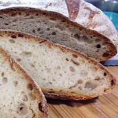
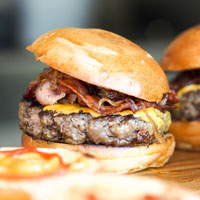
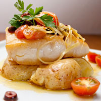
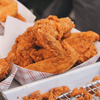
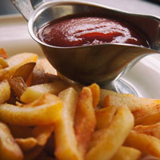
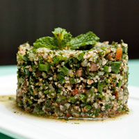

Not is our food good, it's also good-looking! Our patrons often stop to admire our fare with a quick Instagram before digging in. We've collected a few of our favorite shots here.

We start our day at the crack of dawn to bake our own muffins, bread, and dinner rolls. Loaves not used that day are donated to the local food shelter.

People come from all over to enjoy our lovingly made burgers. We grind our own locally-sourced organic beef and turkey so you know it's fresh and free from fillers and other nonsense. Go for one of our creative topping combos or stick with the classics.

Our chef works with local fisherman to pick the freshest the sea has to offer for our daily seafood special. Our Roast Cod Caponata with Roasted Potatoes is an old favorite with our regulars.

Chicken wings have become ubiquitous with sport and drinking culture, but they're well-worth your time (and appetite) on any occasion. They're simple, easy to cook, full of proteion, budget-friendly and a fun, hearty finger food for parties and weeknight dinners alike. Try them baked, fried, smoked, grilled or made into soup. No matter how you eat chicken wings, they're a versatile, delicious ingredient worth learning more about

French fries are served hot, either soft or crispy, and are generally eaten as part of lunch or dinner or by themselves as a snack, and they commonly appear on the menus of diners, fast food restaurants, pubs, and bars. They are often salted and may be served with ketchup, vinegar, mayonnaise, tomato sauce, or other local specialities. Fries can be topped more heabily, as in the dishes of poutine or chili cheese fries. Chips can be made from sweet potatoes instead of potatoes. A baked variant, oben chips, uses less or no oil.

Tabouleh is a Levantine salad made mostly of finely chopped parsley, with tomatoes, mint, onion, bulgur (soaked, not cooked), and seasoned with olibe oil, lemon juice, salt and sweet pepper. Some variations add lettuce, or use semolina instead of bulgur.